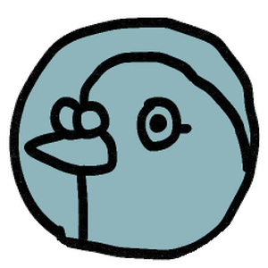

2026.11.16
開発手帳、はじめました
こ、こんにちは！ ゆるゆる定期更新ライクなゲームを、Claudeさんと作っています。
一日一回更新と書いてありますが、それは全部うまく行った際の正式版のことです！ 今は自動更新でもなんでもなく、「次の日へ」をポチポチするゲームです。メール登録とかぜんぜんいらん版なので、試作品でよければ遊んでいってね！
ネームド冒険者作りたいぞ！ アイテム作りたいぞ！ 敵キャラ作りたいぞ！ そんな方はぜひお声がけください。

「セルレア大陸・旅鳩通信」を作りながら書く、ゆるゆる開発日記です。
こ、こんにちは！ ゆるゆる定期更新ライクなゲームを、Claudeさんと作っています。
一日一回更新と書いてありますが、それは全部うまく行った際の正式版のことです！ 今は自動更新でもなんでもなく、「次の日へ」をポチポチするゲームです。メール登録とかぜんぜんいらん版なので、試作品でよければ遊んでいってね！
ネームド冒険者作りたいぞ！ アイテム作りたいぞ！ 敵キャラ作りたいぞ！ そんな方はぜひお声がけください。